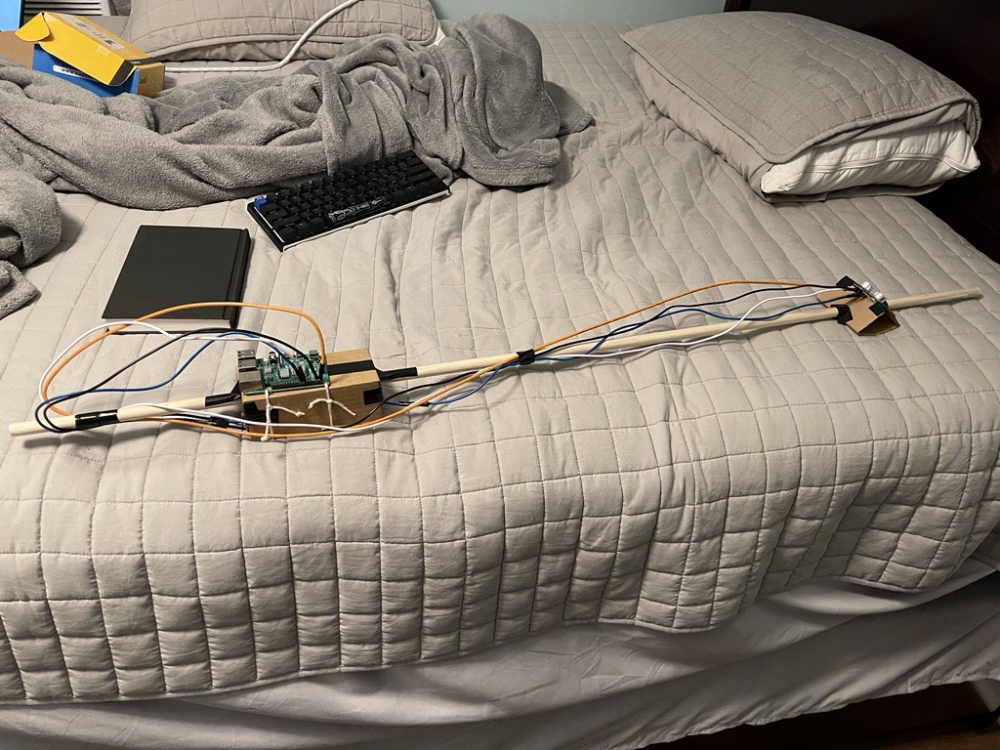

Projects

Raspberry Pi powered white cane
- Created a white cane that utilizes a Rasberry Pi and ultrasnoic sensors to help warn blind people of upcoming objects.
- Utilized the Python language to create the guiding program.
- Achieved a functional prototype with precise obstacle detection and effective real-time alerting, demonstrating strong problem-solving and technical skills.
Unix shell
- Designed and implemented a custom Unix shell, creating a user-friendly command-line interface for excuting and managing processes.
- Utilized C programming to build the shell from scratch, demonstrating profiency in systems programming and low-level operations.
- Incorporated features such as background processing, piping, and redirection to extend the shell's capabilites and improve user experience.

Connect 4
- Designed and developed a connect 4 game with a user-friendly interface, allowing player to compete against each other.
- Implemented game logic and rules C, including grid management, win condition checks, and player moves.
- Tested extensively to identify and fix bugs, ensuring a stable and enjoyable gaming expereince for users.